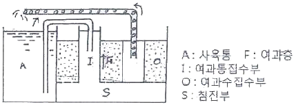

수산양식산업기사 (2010-07-25 기출문제)
1과목: 어류양식
1. 다음 중 은어의 성육장으로 가장 좋은 지반은?
- 암초(岩礁)
- 자갈
- 사니질(砂泥質)
- 니질(泥質)
(정답률: 56%)

2. 다음 그림은 사육조 통기장치로서 순환사육조의 여러 방식 중의 하나인데 해당되는 여과방식은?

- 외식정여과
- 외식역여과
- 내식정여과
- 내식역여과
(정답률: 70%)
3. 자주복에 대한 설명 중 적당하지 못한 것은?
- 수온 10℃ 이하나 28℃ 이상에서는 뻘 속에 잠입하는 습성이 있다.
- 29℃ 에서는 박동수가 급격히 증가한다.
- 저염분에 대한 저항역이 강하다.
- 양식시의 서식 적수온범위는 15~25℃ 이다.
(정답률: 67%)
4. 넙치의 알에 대한 설명 중 옳은 것은?
- 분리부성란
- 응집성 부성란
- 분리침성란
- 부착성 침성란
(정답률: 96%)
5. 활어운반을 위한 기본 원리에 관한 내용 중 틀린 것은?
- 대사기능을 낮추기 위하여 운반전 2~3일 동안 어류를 굶긴다.
- 운반 용수의 온도를 낮게 유지시킨다.
- 대부분 저밀도로 운반하기 때문에 산소의 보충은 필요 없다.
- 어류의 대사 또는 체표 분비에 의한 오물 제거를 위한 여과장치를 둔다.
(정답률: 100%)
6. 금붕어의 초기 선별 기준으로 가장 좋은 것은?
- 체색
- 두장/체장
- 체고/체장
- 꼬리형태
(정답률: 100%)
7. 다음 중 양식 사업을 하기위하여 가장 먼저 고려해야 할 사항은?
- 생물의 종류
- 성장도
- 수요
- 사료문제
(정답률: 91%)
8. 뱀장어 양식의 경제성을 고려하여 선택된 사육관리 내용 중 옳지 못한 것은?
- 광구형(鑛口形) 종묘 선택
- 생사료 선택
- 배합사료 선택
- 수차 선택
(정답률: 79%)
9. 잉어의 인공수정시 링거액을 만드는 방법으로 가장 올바른 것은 무엇인가?
- 물 1L당 소금 5.5g, 염화칼슘 0.2g, 염화칼륨 0.3g
- 물 1L당 소금 6.5g, 염화칼슘 0.3g, 염화칼륨 0.3g
- 물 1L당 소금 7.5g, 염화칼슘 0.4g, 염화칼륨 0.2g
- 물 1L당 소금 8.5g, 염화칼슘 0.5g, 염화칼륨 0.2g
(정답률: 60%)
10. 순환여과식 사육장치의 구성요소가 아닌 것은?
- 사육조
- 침전조
- 생물 여과조
- 원영지
(정답률: 95%)
11. 같은 사료에 의하여 증육계수를 추정할 때 고려하지 않아도 되는 것은?
- 연령
- 어종
- 공급방법
- 사료의 온도
(정답률: 95%)
12. 잉어의 부화 수온 범위가 15~30℃일 때, 부화에 소요되는 일수를 기술한 것 중 가장 적합한 것은?
- 15℃ 일 때 5일, 20℃일 때 3.2일, 30℃일 때 2.1일
- 15℃ 일 때 6일, 20℃일 때 4.2일, 30℃일 때 2.1일
- 15℃ 일 때 7일, 20℃일 때 5.2일, 30℃일 때 3.1일
- 15℃ 일 때 8일, 20℃일 때 6.2일, 30℃일 때 3.1일
(정답률: 75%)
13. 조피볼락의 특징으로 바르지 않은 것은?
- 체내수정을 하여 새끼를 출산하는 어류이다.
- 육질은 참돔, 넙치와 같이 백색육이다.
- 자연산의 최소성체는 수컷은 2년생, 암컷은 3년생이다.
- 조피볼락의 출산은 주로 일출경(오전 4~6시)에 이루어진다.
(정답률: 67%)
14. 자연상태인 바다에서 넙치 산란기로 가장 적당한 것은?
- 1월경
- 3월경
- 5월경
- 7월경
(정답률: 83%)
15. 참돔 가두리 양식장의 적지조건에 대한 설명 중 틀린 것은?
- 해수의 유동이 좋은 수역
- 수온이 연중 10~15℃를 유지하는 수역
- 사료의 공급, 양성어의 출하 등이 편리한 곳
- 하천수의 유입에 의한 비중 변동이 없는 곳
(정답률: 95%)
16. 자주복 양식에 대한 설명으로 적합하지 않은 것은?
- 부화 직후 자어의 크기는 2.6~2.9mm 이다.
- 치자어기에 공식현상이 심하다.
- 운반 시 비닐봉지를 사용하는 것이 좋다.
- 가두리 그물은 비닐피복 철사망이나 네트론망을 사용한다.
(정답률: 93%)
17. 다음 중 어류 종묘생산을 위한 부화 시 주의사항과 관계가 가장 적은 것은?
- 용수(用水)
- 염분(鹽分)
- 먹이(飼料)
- 광선(光線)
(정답률: 70%)
18. 다음 중 잉어 양식 시 먹이를 제일 많이 주어야 하는 수온은?
- 10~15℃
- 15~20℃
- 20~25℃
- 25~30℃
(정답률: 67%)
19. 다음의 어류 중에서 적정사육수온이 가장 낮은 어류는?
- 무지개송어
- 채널메기
- 넙치
- 조피볼락
(정답률: 94%)
20. 무지개 송어의 수정란에 대한 설명으로 틀린 것은?
- 광선에는 매우 약하다.
- 장거리 운반할 때에는 발안기 전에 운반해야 한다.
- 최적부화수온은 10℃ 전후이다.
- 약 10℃ 전후에서 16일이 지나면 발안기가 된다.
(정답률: 54%)
2과목: 무척추동물양식
21. 새고막 양식장으로서 적합하지 않는 것은?
- 풍파가 적은 내만인 곳
- 조류소통이 좋은 곳
- 간조선으로부터 수심 2~3m 되는 곳
- 20~60%가 사질로 된 사니질의 저질
(정답률: 50%)
22. 우리나라산 단련 종굴의 단련기간은 일반적으로 약 몇 개월인가?
- 4~5개월
- 7~8개월
- 10~11개월
- 13~14개월
(정답률: 58%)
23. 다음 중 재생력을 이용하여 양성하는 종은?
- 해삼
- 진주조개
- 문어
- 우렁쉥이
(정답률: 72%)
24. 배양한 먹이인 Platymonas를 하루 한 마리에 대해 30만 세포씩 준비해야 할 참전복의 치패의 각장 크기는?
- 2~3mm
- 5~6mm
- 8~10mm
- 10mm 이상
(정답률: 36%)
25. 종묘를 방양할 때 농업의 모심기 하는 것과 같이 한 마리씩 심어 줘야 하는 종류는?
- 진주조개
- 바지락
- 가리비
- 키조개
(정답률: 65%)
26. 보리새우의 유생기 중 먹이를 공급할 필요가 없는 때는?
- 노플리우스
- 조에아
- 미시스
- 포스트라바
(정답률: 67%)
27. 다음 중 제방식 양성법으로 많이 양성하는 것은?
- 가리비
- 대하
- 백합
- 우렁쉥이
(정답률: 67%)
28. 먹이생물의 보존배양(stock culture)에 대한 내용으로 가장 거리가 먼 것은?
- 가장 빠른 성장을 기대할 수 있다.
- 환경조건을 최적조건으로 맞추지 않는다.
- 다른 종이나 세균 등이 혼입 되어서는 안 된다.
- 단일종으로 장기간 살려 나가야 한다.
(정답률: 62%)
29. 다음 생물의 유생 중 부유생활 기간이 가장 긴 것은?
- 굴
- 전복
- 피조개
- 가리비
(정답률: 50%)
30. 부유유생이 착저할 때 서로 유사한 생태적 특성을 보이는 종끼리 짝지어진 것은?
- 참굴 – 피조개
- 진주조개 – 참가리비
- 바지락 – 새고막
- 우렁쉥이 – 진주담치
(정답률: 62%)
31. 참굴 양식시설용 밧줄 수하식 1대(200m)에 수하 양성할 수 있는 수하연수를 바르게 표시한 것은?
- 200연
- 500연
- 800연
- 1100연
(정답률: 47%)
32. 다음 중 어린 전복의 먹이로 배양하기에 가장 적합한 종류는?
- Chaetoceros sp.
- Skeletonema sp.
- Navicula sp.
- Artemia
(정답률: 46%)
33. 다음 중 참굴유생의 부유기간에 가장 영향을 미치는 것은?
- 영양염
- 산
- 수온
- 비중
(정답률: 80%)
34. 조개류의 식해성 해적생물은?
- 따개비
- 대수리
- 폴리도라
- 오만둥이
(정답률: 42%)
35. 다음 중 전복의 산란자극 방법으로 가장 많이 사용되는 것은?
- 음건자극
- 담수주입자극
- 뇌하수체호르몬 주사
- 자외선조사 해수자극
(정답률: 69%)
36. 필로소마(phyllosoma)의 부유유생기를 갖는 종류는?
- 꽃게
- 대하
- 우렁쉥이
- 닭새우
(정답률: 62%)
37. 피조개 종묘생산에 관한 설명 중 틀린 것은?
- 종묘의 방양 시기는 여름철이 가장 좋다.
- 종묘의 크기는 각장 5~20mm 정도가 좋다.
- 채묘시설 시기는 산란 후 약 3주 지나서부터 2~3일 사이가 좋다.
- 종묘의 방양밀도는 1m2 당 10~25마리 정도가 가장 좋다.
(정답률: 37%)
38. 대합의 종묘로 천연적으로 발생한 것을 주로 이용하는 경우 그 이유로 가장 적합한 것은?
- 산란자극을 받지 않기 때문이다.
- 성숙한 어미라도 암수구별이 힘들기 때문이다.
- 채묘하는 방법이 특이하기 때문이다.
- 난핵포가 소실한 다음 수정하기 때문이다.
(정답률: 60%)
39. 우렁쉥이의 채란에서 부착할 때까지 소요되는 기간은?
- 32~33일간
- 22~23일간
- 12~13일간
- 2~3일간
(정답률: 59%)
40. 단련종굴의 장점으로 가장 적합한 것은?
- 성장이 빠르고 폐사율이 낮다.
- 양성기간이 길고 생산량이 많다.
- 산란량이 많고 환경변화에 대해 저항력이 크다.
- 생식소의 발달정도가 높아 계획생산을 할 수 있다.
(정답률: 31%)
3과목: 해조류양식
41. 김 사상체의 병해 중 황반병 발생의 직접적인 원인은?
- 배양장의 나쁜 시설이 원인이 되어 발생한다.
- 탄산칼슘이 조개껍질의 표면에 침착하여 발생한다.
- 호염성 세균에 의해서 발생한다.
- 광선과 온도의 불균형이 원인이 되어 영양부족으로 발생한다.
(정답률: 47%)
42. 미역의 각 생장 단계와 온도 관계가 적합하지 않은 것은?
- 유주자는 5~10℃에서 방출이 시작되며 최적온도는 14℃이다.
- 배우체가 발아해서 성장하는 온도는 17~20℃정도가 적합하며, 27℃ 이상은 발아하지 않는다.
- 배우체의 성숙과 아포체의 발하는 다함께 20℃ 이하의 저수온과 밝은 광선 밑에서 잘된다.
- 아포체와 유엽 때에는 몸 전체가 자라는 개재 생장을 하며, 15~17℃에서 잘 크고 수온이 낮아지면 늦어진다.
(정답률: 25%)
43. 다음 중 표면 조도를 100으로 했을 때 우뭇가사리의 질이나 성장이 가장 좋은 것은?
- 10~20% 되는 곳
- 20~30% 되는 곳
- 30~40% 되는 곳
- 40~50% 되는 곳
(정답률: 7%)
44. 다음 설명 중 틀린 것은?
- 미역은 1년생이다.
- 다시마는 다년생이다.
- 쇠미역사촌은 다년생이다.
- 우뭇가사리는 다년생이다.
(정답률: 58%)
45. 다음 중 중성포자를 방출하는 해조류는?
- 김
- 대황
- 다시마
- 우뭇가사리
(정답률: 63%)
46. 다시마를 솎음채취 할 때 연승에 남아있는 개체는 1m 당 몇 개체가 적당한가?
- 10 개체 이하
- 25~50 개체
- 70 개체 이상
- 100 개체 이상
(정답률: 64%)
47. 홍조류가 엽체에 함유한 색소가 아닌 것은?
- 루테인
- 클로로필 a
- 클로로필 b
- 피코시아닌
(정답률: 65%)
48. 조간관측을 할 때 빠트려서는 안되는 가장 중요한 관측사항은?
- 시간과 유속
- 시간과 수위
- 시간과 수온
- 수온과 비중
(정답률: 60%)
49. 방사무늬김의 영양번식이 가장 왕성한 크기는?
- 0.5~1cm
- 1~5cm
- 6~10cm
- 10~15cm
(정답률: 54%)
50. 톳의 수하식 양식에서 어미줄에 끼우는 재료는?
- 줄기의 끝부분을 끼운다.
- 포복지가 붙어 있는 줄기를 끼운다.
- 포복지를 잘라서 끼운다.
- 생식기 가지를 끼운다.
(정답률: 47%)
51. 조가비 사상체의 수하식 배양법의 장점이 아닌 것은?
- 수온 변화가 적다.
- 염분의 변화가 적다.
- 대량 배양에 편리하다.
- 병해가 발생하면 처리하기가 편리하다.
(정답률: 36%)
52. 김 양식에 있어 냉장 김발을 활용함으로써 얻을 수 있는 이점과 가장 거리가 먼 것은?
- 갯병 피해에 능동적인 대처 가능
- 양식 기간의 연장
- 양식 생산의 안정화
- 양식장의 노후화 예방
(정답률: 74%)
53. 김 양식에 있어서 영양제로 쓸 수 없는 물질은?
- NaOH
- Fe-EDTA
- Vitamin B12
- NaNO3
(정답률: 34%)
54. 김의 과포자는 다음 중 어느 것에서 만들어진 것인가?
- 사상체
- 각포자
- 중성포자
- 유성생식
(정답률: 43%)
55. 다음 중 미역의 유주자 방출 시기로 가장 알맞은 것은?
- 1~3월
- 4~6월
- 7~9월
- 10~12월
(정답률: 43%)
56. 김의 뜬발 양식을 할 때 착생포자는 cm2 당 얼마 정도가 적당한가?
- 500~700개
- 300~500개
- 100~200개
- 10~50개
(정답률: 19%)
57. 다음 중 냉장발의 목적으로 맞지 않은 것은?
- 초기 김갯병의 피해극복
- 양식기간의 연장
- 해적생물의 구제
- 선발육종의 편리
(정답률: 43%)
58. 2년생 다시마 양성 시 묵은 부위를 잘라내는 이유는?
- 엽체의 비후를 위해서
- 성장촉진을 위해서
- 이끼벌레의 산란방지를 위해서
- 맛을 좋게 하기 위해서
(정답률: 50%)
59. 마른김을 장기간 보관하기 위한 김의 적정 함수율은?
- 5% 이하
- 10%
- 15%
- 20% 이상
(정답률: 58%)
60. 우뭇가사리의 군락을 조성하기 위한 적절한 방법이 아닌 것은?
- 투석
- 바위닦기
- 이식
- 준설
(정답률: 43%)
4과목: 수산생물
61. 일반적으로 대륙붕이라 불리우며 수심 200m 까지의 해저면을 무엇이라 하는가?
- 조상대
- 조간대
- 천해계
- 심해계
(정답률: 58%)
62. 다음 중 비점착 침성란을 산란하는 어류는?
- 멸치
- 은어
- 넙치
- 송어
(정답률: 43%)
63. 다음 조개류 중에서 어린 시기에 점액성 물질을 분비하며, 조류를 타고 이동하는 습성이 있는 것은?
- 가리비
- 진주조개
- 대합
- 동죽조개
(정답률: 43%)
64. 다음 중 극피동물에 속하지 않는 것은?
- 불가사리
- 성게
- 우렁쉥이
- 해삼
(정답률: 48%)
65. 다음 중 난태생어에 해당되는 것은?
- 망상어
- 잉어
- 연어
- 멸치
(정답률: 69%)
66. 다음 어류 중 포란수가 가장 적은 종류는?
- 괭이상어
- 붕장어
- 개복치
- 참돔
(정답률: 34%)
67. 적조현상(赤潮現象)에 관한 설명으로 틀린 것은?
- 수중의 환경변화로 플랑크톤이 일시에 대량 번성하여 발생한다.
- 유독성 플랑크톤인 경우 양식장 같은 곳에 큰 피해를 준다.
- 물의 색깔이 변한다.
- 우리나라에서는 겨울철에 가장 심하게 발생한다.
(정답률: 62%)
68. 재연성 변태는 다음 어느 어종에서 볼 수 있는가?
- 뱀장어
- 학공치
- 당멸치
- 복어
(정답률: 58%)
69. 요각류 중 닻벌레(Lernaea)의 Copepodite 유생은 몇 기(基)까지 있는가?
- 1기
- 3기
- 5기
- 7기
(정답률: 64%)
70. 다음 설명 중 심해어류의 특징으로 맞지 않는 것은?
- 부레가 퇴화한다.
- 비늘이 퇴화한다.
- 입과 위가 퇴화한다.
- 눈이 퇴화한다.
(정답률: 58%)
71. 수괴의 생태학적 지표종으로 알려진 동물은?
- 환형동물
- 편형동물
- 모악동물
- 윤형동물
(정답률: 57%)
72. 다음 해조류 중 형태적으로 가장 발달된 무리이면서 세대교번을 하지 않는 것은?
- 미역류
- 우뭇가사리
- 모자반류
- 감태류
(정답률: 65%)
73. 다음 동물 중 분류학상 잘못 짝지어진 것은?
- 대하 – 새우류
- 왕게 – 게류
- 닻벌레 – 요각류
- 갯반디 – 패충류
(정답률: 54%)
74. 다음 어류 중 점착란을 산란하는 어종은?
- 멸치
- 갈치
- 은어
- 참돔
(정답률: 74%)
75. 모든 해조류의 엽록체에서 볼 수 있는 색소는?
- 카로티노이드
- 푸코산틴
- 클로로필 a
- 피코빌린
(정답률: 67%)
76. 해산 갑각류인 꽃게에 대해서 바르게 설명한 것은?
- 정자는 암컷의 저정낭에 간직되었다가 5월에 가장 많이 수정한다.
- 노우플리우스로서 부화하여 조에어 미시스단계를 거쳐 성체가 된다.
- 어릴 때부터 깊은 곳으로 이동하여 성장하며 깊이 100m 까지가 서식범위이다.
- 암, 수 딴몸 난생이며 유생은 비핀나리아라고 한다.
(정답률: 56%)
77. 김의 광합성 보상점은 몇 lx로 알려져 있는가?
- 300~100 lx
- 500~300 lx
- 700~500 lx
- 900~700 lx
(정답률: 43%)
78. 다음 중 육식성 어류로 짝지어지지 않은 것은?
- 초어, 은어
- 다랑어, 갈치
- 톱상어, 별상어
- 가다랑어, 붕장어
(정답률: 65%)
79. 어류의 호흡빈도에 가장 크게 영향을 미치는 환경요인은?
- 나이
- 계절
- 수온
- pH
(정답률: 71%)
80. 조간대 생물의 특징에 대한 내용 중 가장 거리가 먼 것은?
- 환경 기질 중 공기와 물에 잘 적응되어 있다.
- 패류는 패각이 두터운 편이다.
- 광온성이며 협염성이다.
- 물리적인 요소 중 파도에 잘 적응한다.
(정답률: 39%)
5과목: 수질분석 및 양식생물
81. 일정용적의 시료용액에 농도를 알고 있는 표준용액을 적가(適加)하여 반응이 끝날 때까지 소비된 표준용액의 농도와 용적으로 당량관계를 기초로 목적성분의 함량을 산출하는 방법은?
- 용량분석법
- 당량법
- 정성법
- 비색법
(정답률: 36%)
82. 어류에 기생하는 갑각류를 구제하고자 할 때 아래 약품 중에서 가장 효과적인 것은?
- 포르말린
- 트리클로로폰
- 황산동
- 과망간산칼륨
(정답률: 43%)
83. 해수의 pH 변화에 관하여 틀린 것은?
- 해수는 pH 변화에 대하여 완충작용을 한다.
- 식물의 광합성작용이 활발하면 pH는 약간 높아진다.
- 해수의 pH는 약간 알칼리성을 띈다.
- 유화수소(H2S)가 발생하면 알칼리성을 띈다.
(정답률: 65%)
84. 다음 중 Oxyteracycline HCI의 투약 기관과 휴약기간이 알맞게 정리된 것은?
- 뱀장어의 경우 투약기간 5일, 휴약기간 10일
- 참돔의 경우 투약기간 10일, 휴약기간 30일
- 보리새우의 경우 투약기간 3~7일, 휴약기간 25일
- 방어의 경우 투약기간 7일, 휴약기간 15일
(정답률: 67%)
85. 다음 중 Aeromonas균이 아닌 다른 세균(細菌)에 의하여 발병되는 병명은?
- 솔발울병
- 잉어 적반병
- 뱀장어 적점병
- 송어 절창병
(정답률: 27%)
86. 윙클러법으로 용존 산소량을 정량할 때 종점 판별에 사용되는 것은?
- 전분
- 우라닌-전분
- 페놀프탈렌
- 에리오크롬블랙티
(정답률: 47%)
87. 양식어의 사료원으로 생선을 계속 투여하면 생선 중에 함유된 티아미나제가 사육어의 영양소 중 어떤 부분을 파괴하여 폐사에 이르게 하기도 하는데 그것은 무엇인가?
- 비타민 E
- 비타민 B1
- 비타민 C
- 비타민 B2
(정답률: 70%)
88. 가정에서 수돗물을 받아 가정용 수조에 즉시 사용할 경우 수돗물 소독약인 클로로칼키를 중화시키는데 사용하는 약품명은?
- Furan 제
- Sulfa 제
- Mineral 제
- Hypo 제
(정답률: 65%)
89. 암모니아성 질소시험법의 시료보존에 관한 내용 중 틀린 것은?
- 채취한 시료는 즉시 시험하여야 한다.
- 시료보존 시 일반적으로 시료 1L에 염산 또는 황산을 5mL 넣어야 한다.
- pH는 약 2로 조절하여 4℃에서 보관한다.
- pH는 약 12로 조절하여 24℃에서 보관한다.
(정답률: 46%)
90. 다음 중 담수 백점병 발생의 주원인이 되는 것은?
- 저산소, 과밀사육에 의한 스트레스
- 수온이 30℃ 전 후로 상승되었을 때
- 세균 감염으로 궤양이 생겼을 때
- 1년 미만의 치어인때
(정답률: 60%)
91. 병원균에 따라서는 어류의 연령에 관계없이 감염하는 것과 그렇지 않은 것이 있다. 다음 중 자어에서는 거의 감염되지 않고 성어에 감염되기 쉬운 것은?
- 은어의 비브리오병
- 뱀장어의 에드와드병
- 연어의 세균성 신장병
- 송어의 절창병
(정답률: 39%)
92. 어류의 질병 중 가스병의 주된 원인 기체는?
- 질소가스
- 수소가스
- 탄산가스
- 암모니아가스
(정답률: 25%)
93. 닻벌레(Lernaea cyprinacea)에 대한 설명 중 틀린 것은?
- 닻벌레는 Nauplius 시기에는 자유 유영생활을 하고 Copeposis 1기 때부터 숙주에 기생한다.
- 닻벌레의 수컷은 교미 후 죽고, 암컷이 숙조에 고착기생한다.
- 숙주 특이성이 낮다.
- 닻벌레는 아가미와 피부에만 기생한다.
(정답률: 50%)
94. 뱀장어나 잉어 양어장에서 봄에 수생균증이 많이 나타나는 이유는?
- 월동시 어체 내에 Aeromonas균이 번식하였기 때문이다.
- 수생균의 유주자가 많아지기 때문이다.
- 수생균이 잘 번식되는 시기이기 때문이다.
- 어류가 수생균의 유주자를 먹기 때문이다.
(정답률: 63%)
95. 포자충류의 발생을 막는 가장 적당한 예방책은?
- 수온을 상승시킨다.
- 못의 소득을 충분히 한다.
- 후란제를 경구투여 한다.
- 물의 유통을 막는다.
(정답률: 63%)
96. 비중계로 염분을 측정할 때 필수적인 기구가 아닌 것은?
- 뷰렛
- 수온계
- 실린더
- 비중계
(정답률: 62%)
97. 18℃인 담수의 용존산소 포화량은 6.81 mL/L 이다. 18℃인 어느 담수 시료의 용존산소량이 4.77mL/L로 측정되었다면 이 시료의 산소 포화도는?
- 70%
- 0.7%
- 143%
- 1.43%
(정답률: 31%)
98. 수심별로 수온 측정과 채수를 하고자 할 때 가장 적합한 기구는?
- 난센채수기
- 반돈채수기
- 복원식채수기
- 마이어식채수기
(정답률: 65%)
99. 분생포자가 아가미의 표면에 부착하여 발아함으로서 만들어진 균사가 아가미 조직에 침입하게 되면 주변에 혈구가 모임으로서 멜라닌이 침착되게 되는데 이러한 염증부의 혹변이 특징이 되어 검은 아가미병이라고도 하는 이 질병은?
- 르네아증증
- 푸사리움증
- 스피로헤타증
- 브란키우라증
(정답률: 58%)
100. 부영양화 물질로 가장 문제가 되며, 유기적 오염의 초기 단계에 있음을 나타내는 물질로서 특히 어류에서 혈액 중 헤모글로빈의 산소 결합작용을 방해하며 질식사의 원인 물질 중 하나가 되고 정수지의 염소 소독시 대량의 염소를 소비하게 하는 것은?
- 유기탄소
- 유리암모니아
- 질산성 질소
- 유화물
(정답률: 54%)